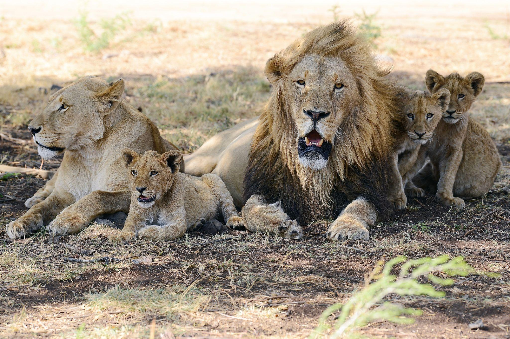
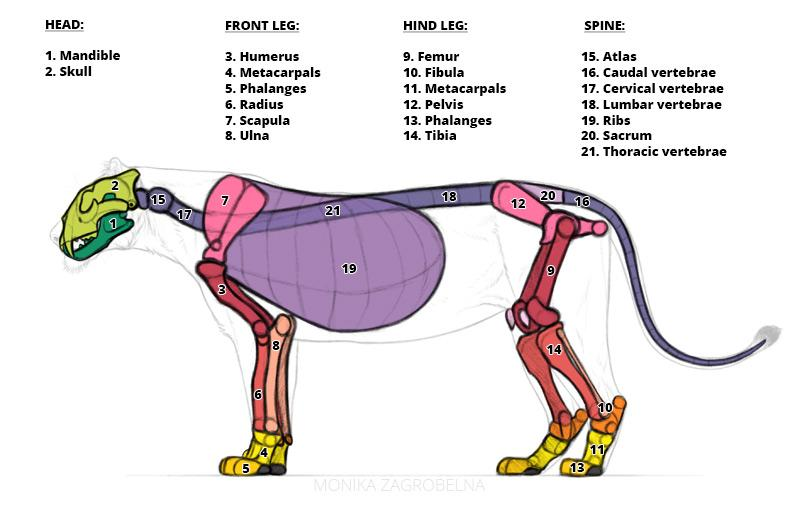
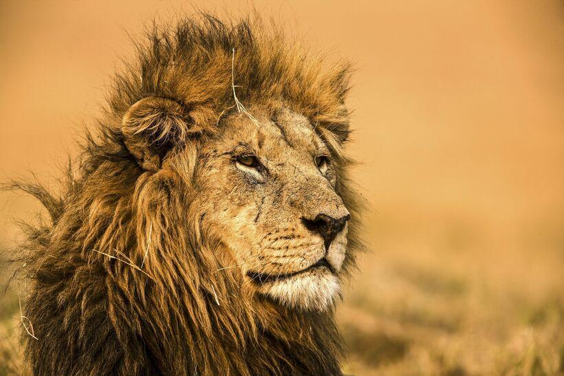

As dawn rises across the African savanna, the roar of a lion echoes through the grasslands. Lions are among the most iconic predators on Earth, known for their strength, social pride structure, and powerful hunting abilities.
Lions symbolize courage and dominance in many cultures. Today, they remain one of the most important apex predators in African ecosystems.
Lions possess muscular bodies, powerful jaws, sharp retractable claws, and exceptional night vision. Male lions are recognizable by their large manes, which help protect them during fights.


Lions mainly inhabit savannas, grasslands, and open woodlands across sub-Saharan Africa. A smaller population of Asiatic lions survives in India.
Scientists estimate around 20,000–25,000 lions remain in the wild today. Lion populations have declined due to habitat loss, hunting, and reduced prey availability.
Conservation organizations work to protect lions through wildlife reserves, anti-poaching patrols, habitat restoration, and scientific research programs.
| Feature | Information |
|---|---|
| Scientific Name | Panthera leo |
| Average Lifespan | 10–14 years |
| Weight | 120–250 kg |
| Speed | Up to 80 km/h |
| Social Group | Pride |